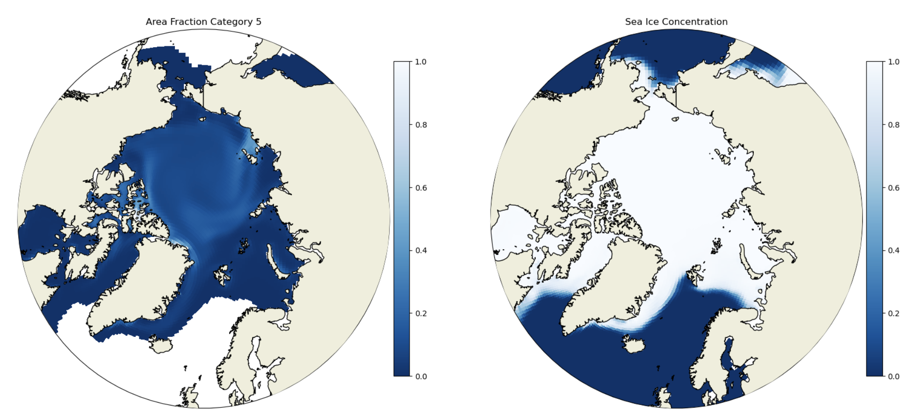
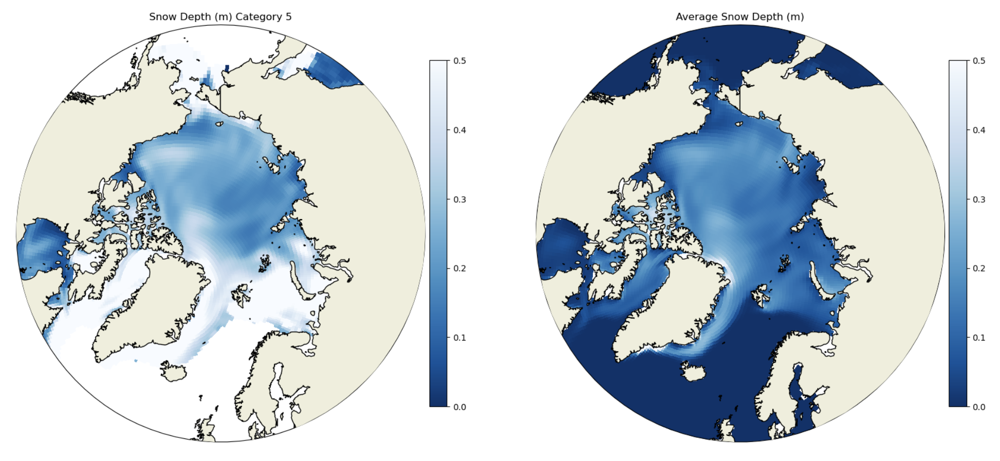
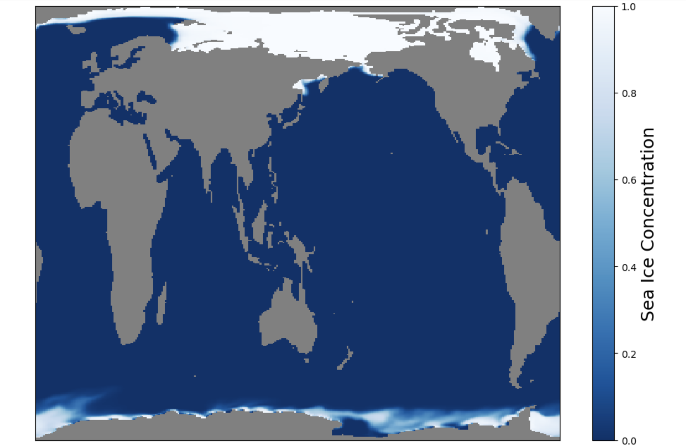
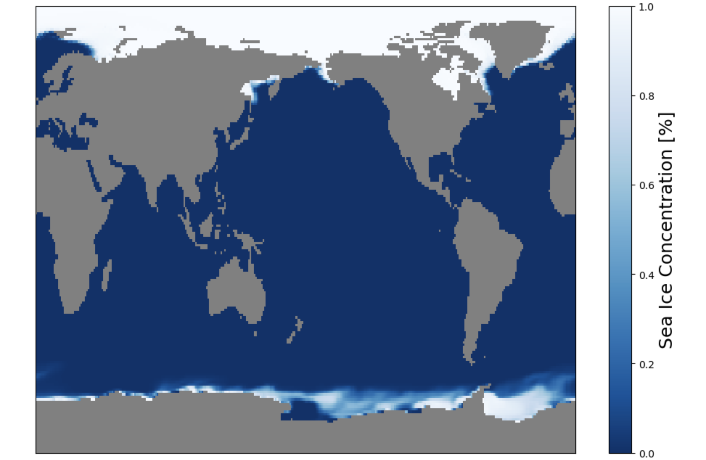
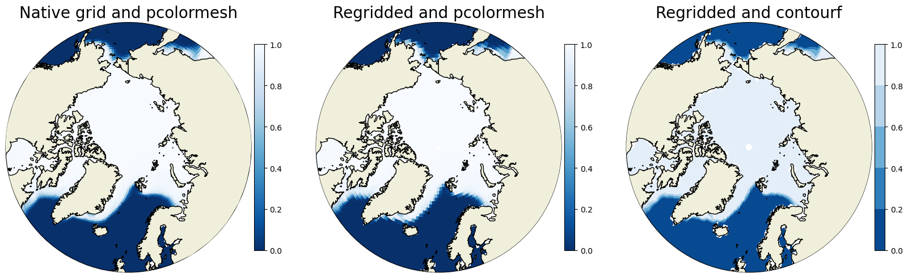

Advanced Plotting#
BEFORE BEGINNING THIS EXERCISE - Check that your kernel (upper right corner, above) is NPL 2023a. This should be the default kernel, but if it is not, click on that button and select NPL 2023a.
This activity was developed primarily by David Clemens-Sewall.
This notebook provides some additional examples of more advanced sea ice fields. Here we introduce the concept of the subgridscale ice thickness distribution (ITD). This means we have a fraction of ice in each grid cell that is binned into thickness categories.
import xarray as xr
import numpy as np
import matplotlib.pyplot as plt
import matplotlib.path as mpath
from matplotlib.gridspec import GridSpec
import pop_tools
import cartopy.crs as ccrs
import cartopy.feature as cfeature
import os
For these exercises we will need to import multiple variables, below is an example of one way to do so.
monthly_output_path = "/glade/campaign/cgd/cesm/CESM2-LE/ice/proc/tseries/month_1"
run_name = "b.e21.BHISTcmip6.f09_g17.LE2-1001.001"
var_names = ['aice',
'aicen',
'vsnon',
'hs',
'fsens',
'fsens_ai',
]
da_list = []
for var_name in var_names:
files = os.path.join(monthly_output_path, var_name,
run_name + ".cice.h." + var_name + ".*")
ds_in = xr.open_mfdataset(files)
da_list.append(ds_in[var_name])
del ds_in
ds = xr.merge(da_list)
del da_list
The next step is to read in some grid information for the gx1v7 dipole grid used in POP and CICE. We will read in three main variables: tarea, TLAT, and TLON. These are the areas of the gridcells along with the latitudes and longitudes of the gridcell centers. Also, we will print the latitude array TLAT to see the metadata.
# get pop grid grid cell areas
grid = pop_tools.get_grid('POP_gx1v7')
# convert tarea to m^2
with xr.set_options(keep_attrs=True):
grid['TAREA'] = grid['TAREA']/(1e4)
grid['TAREA'].attrs['units'] = 'm^2'
We will merge in three main variables: tarea, TLAT, and TLON. These are the areas of the gridcells along with the latitudes and longitudes of the gridcell centers. Note that this overwrites the dataset object from above.
ds = xr.merge([ds.drop(['TLAT', 'TLON', 'ULAT', 'ULON']),
grid[['TLAT', 'TLONG', 'TAREA']].rename_dims({'nlat':'nj','nlon':'ni'})],
compat='identical', combine_attrs='no_conflicts')
ds
Example 1: Plot per-category ice area#
Compare the dataset in this notebook with aice in the basics notebook. Notice that in this case we have an additional category dimension nc. aicen is the per-category ice area fraction. We demonstrate plotting a per-category variable below. We also plot the full sea ice concentration in the final plot.
# make circular boundary for polar stereographic circular plots
theta = np.linspace(0, 2*np.pi, 100)
center, radius = [0.5, 0.5], 0.5
verts = np.vstack([np.sin(theta), np.cos(theta)]).T
circle = mpath.Path(verts * radius + center)
cmap = plt.cm.get_cmap('Blues_r')
# create figure with subplots
fig, axs = plt.subplots(3, 2, figsize=(20,30),
subplot_kw={'projection':ccrs.NorthPolarStereo()})
axs = np.ravel(axs)
# this creates a subplot for each ITD category
for i in ds.nc.values:
ax = axs[i]
ax.set_boundary(circle, transform=ax.transAxes)
ax.add_feature(cfeature.LAND,zorder=100,edgecolor='k')
ax.set_extent([0.005, 360, 90, 55], crs=ccrs.PlateCarree())
this=ax.pcolormesh(ds['TLONG'],
ds['TLAT'],
ds['aicen'].sel({'time':'1850-02-01 00:00:00',
'nc':i}).squeeze(),
cmap=cmap,vmax=1,vmin=0,
transform=ccrs.PlateCarree())
plt.colorbar(this,orientation='vertical',fraction=0.04,pad=0.01)
ax.set_title('Area Fraction Category ' + str(i+1))
# gridcell mean aice in the final subplot
ax = axs[-1]
ax.set_boundary(circle, transform=ax.transAxes)
ax.add_feature(cfeature.LAND,zorder=100,edgecolor='k')
ax.set_extent([0.005, 360, 90, 55], crs=ccrs.PlateCarree())
this=ax.pcolormesh(ds['TLONG'],
ds['TLAT'],
ds['aice'].sel({'time':'1850-02-01 00:00:00'}).squeeze(),
cmap=cmap,vmax=1,vmin=0,
transform=ccrs.PlateCarree())
plt.colorbar(this,orientation='vertical',fraction=0.04,pad=0.01)
ax.set_title('Sea Ice Concentration')
Click here for the solution to final two panels

Figure: Plotting solution.
Question:
How do you get the grid cell total sea ice concentration? In which of the thickness categories is the concentration highest? How does that vary spatially? What does this indicate about the relative importance of different ice thicknesses in different Arctic regions?
Note that the default CICE ice thickness categories are:
Category 1: 0-0.64 m
Category 2: 0.64-1.39 m
Category 3: 1.39-2.47 m
Category 4: 2.47-4.57 m
Category 5: 4.57+ m
Click here for hints
You would calculate the grid cell total sea ice concentration by summing up the concentration in each category. In the central Arctic the concentrations are highest in categories 2 and 3, while on the ice margins the concentrations are highest in category 1. The only location with any substantial thick ice (category 5) is the central Arctic. This indicates that different regions’ sea ice are dominated by very different mean sea ice thickness. This will have implications for ice growth/melt and heat fluxes.
Example 2: Plot per-category snow thickness#
Internally, the model actually stores the snow volume for each category, not the thickness. To get the thickness we need to divide vsnon by aicen (the per category area).
ds['hsn'] = ds['vsnon'] / ds['aicen']
# Max snow depth for colorbars
hs_max = 0.5
# make circular boundary for polar stereographic circular plots
theta = np.linspace(0, 2*np.pi, 100)
center, radius = [0.5, 0.5], 0.5
verts = np.vstack([np.sin(theta), np.cos(theta)]).T
circle = mpath.Path(verts * radius + center)
cmap = plt.cm.get_cmap('Blues_r')
fig, axs = plt.subplots(3, 2, figsize=(20,30),
subplot_kw={'projection':ccrs.NorthPolarStereo()})
axs = np.ravel(axs)
for i in ds.nc.values:
ax = axs[i]
ax.set_boundary(circle, transform=ax.transAxes)
ax.add_feature(cfeature.LAND,zorder=100,edgecolor='k')
ax.set_extent([0.005, 360, 90, 55], crs=ccrs.PlateCarree())
this=ax.pcolormesh(ds['TLONG'],
ds['TLAT'],
ds['hsn'].sel({'time':'1850-02-01 00:00:00',
'nc':i}).squeeze(),
cmap=cmap,vmax=hs_max,vmin=0,
transform=ccrs.PlateCarree())
plt.colorbar(this,orientation='vertical',fraction=0.04,pad=0.01)
ax.set_title('Snow Depth (m) Category ' + str(i+1))
# gridcell mean snow volume in the final subplot
ax = axs[-1]
ax.set_boundary(circle, transform=ax.transAxes)
ax.add_feature(cfeature.LAND,zorder=100,edgecolor='k')
ax.set_extent([0.005, 360, 90, 55], crs=ccrs.PlateCarree())
this=ax.pcolormesh(ds['TLONG'],
ds['TLAT'],
ds['hs'].sel({'time':'1850-02-01 00:00:00'}).squeeze(),
cmap=cmap,vmax=hs_max,vmin=0,
transform=ccrs.PlateCarree())
plt.colorbar(this,orientation='vertical',fraction=0.04,pad=0.01)
ax.set_title('Average Snow Depth (m)')
Click here for the solution to final two panels

Figure: Plotting solution.
Question:
In addition to the per-category snow thickness values we plotted the grid cell mean snow thickness. How do these values compare?
Click here for hints
The per-category snow thickness can be higher than the grid cell mean (see Category 4 and the grid cell mean). This means the thicker ice tends to have thicker snow, but if the overall concentration of the thick ice categories is small then the mean over the grid call can be lower.
Example 4: Remapping a sea ice gridded field#
The sea ice and ocean grids usually have a transformation where the grid North Pole is moved into land to avoid instability problems with converging meridians (See Orthogonal Grids - Murray 1996). In the CESM we use the POP dipole and tripole grids and will soon be using the MOM6 tripole grids. While matplotlib can actually use the 2D latitude and longitude fields to make plots, it is sometimes necessary to remap or regrid the data onto a standard latitude-longitude grid. This can be done using the ESMF remapping tools xESMF for python.
Let’s first plot the raw field so the dipole grid can be visualized.
aice = ds['aice']
aice
fig, ax = plt.subplots(figsize=(12,8))
ax.set_facecolor('0.5') # Fill in model land by making the axis background whatever color you want
im1 = ax.pcolormesh(ds.coords['ni'],ds.coords['nj'],aice[0],cmap='Blues_r',vmin=0,vmax=1)
cbar = plt.colorbar(im1)
cbar.set_label('Sea Ice Concentration',fontsize=18)
plt.xticks([]);
plt.yticks([]);
Click here for the solution

Figure: Plotting solution.
Question:
What do you notice about the Northern Hemisphere? What is going on with Greenland? Do you notice anything odd in the Southern Hemisphere?
Click here for hints
See how the Northern Hemisphere looks weird? Greenland is stretched completely across the top edge of the plot. In contrast, the Southern Hemisphere looks normal.
Next we will import the xesmf library and create a “destination” grid. This is just a simple one-degree by one-degree latitude longitude grid.
import xesmf as xe
# Setting up a target grid to only regrid the sea ice data
lat=np.arange(-90,90,1.0)
lon=np.arange(0,361,1.0)
#create a meshgrid (2D fields of lats and lons)
lon2d,lat2d=np.meshgrid(lon,lat)
#set up the target grid as an xarray Dataset
target_grid=xr.Dataset({'lat': (['y', 'x'], lat2d),'lon': (['y', 'x'], lon2d)})
target_grid
Now we need to create a Dataset. For some reason the regridder does not accept a DataArray.
# Define the dataset and a variable `aice` with dimensions time, nj, and ni. Also, fill the
# lat and lon arrays from the POPgrid dataset.
ds_siconc_ocean = xr.Dataset()
ds_siconc_ocean['aice'] = (('time','nj','ni'),ds['aice'].values)
ds_siconc_ocean.coords['lat'] = (('nj','ni'),grid['TLAT'].values)
ds_siconc_ocean.coords['lon'] = (('nj','ni'),grid['TLONG'].values)
sic_ocean = ds_siconc_ocean['aice']
Next we will use xesmf to regrid from the POP gx1v7 grid to the one degree by one degree regular grid.
#input grid, output grid, method, keyword arguments
#NOTE: This may throw a "FutureWarning", but feel free to ignore it.
regridder=xe.Regridder(sic_ocean[0,:,:], target_grid, 'nearest_s2d',periodic=True,reuse_weights=False)
Now that we have the mapping or regridder we can translate the Xarray Dataset from gx1v7 to a one-degree regular grid.
sic_rg = regridder(sic_ocean)
# Plot the first slice of the new dataset.
fig, ax = plt.subplots(figsize=(12,8))
ax.set_facecolor('0.5') # Fill in model land by making the axis background whatever color you want
im4 = ax.pcolormesh(lon,lat,sic_rg[0,:,:],cmap='Blues_r',vmin=0,vmax=1)
cbar = plt.colorbar(im4)
cbar.set_label('Sea Ice Concentration [%]',fontsize=18)
plt.xticks([]);
plt.yticks([]);
Click here for the solution

Figure: Plotting solution.
Question:
What do you notice about the Northern Hemisphere now?
Click here for hints
See how the Northern Hemisphere looks weird? Greenland is stretched completely across the top edge of the plot. In contrast, the Southern Hemisphere looks normal.
This data could now be differenced against an observational dataset on a one-degree grid. Additionally, if you wanted to plot the model data using contourf instead of pcolormesh (which is what we used in the rest of these exercises).
Now let’s plot the original data with pcolormesh, the regridded data with pcolormesh, and the regridded data with contourf to see how this looks different.
# make circular boundary for polar stereographic circular plots
theta = np.linspace(0, 2*np.pi, 100)
center, radius = [0.5, 0.5], 0.5
verts = np.vstack([np.sin(theta), np.cos(theta)]).T
circle = mpath.Path(verts * radius + center)
# define the colormap
cmap = plt.cm.get_cmap('Blues_r')
# create the figure
fig = plt.figure(figsize=(20,20))
### make first plot - native grid - using pcolormesh
ax = fig.add_subplot(1,3,1, projection=ccrs.NorthPolarStereo())
ax.set_boundary(circle, transform=ax.transAxes)
ax.add_feature(cfeature.LAND,zorder=100,edgecolor='k')
# sets the latitude / longitude boundaries of the plot
ax.set_extent([0.005, 360, 90, 55], crs=ccrs.PlateCarree())
#Plot the first timeslice of aice
this=ax.pcolormesh(sic_ocean['lon'],
sic_ocean['lat'],
sic_ocean.isel(time=0).squeeze(),
cmap=cmap,vmax=1,vmin=0,
transform=ccrs.PlateCarree())
plt.colorbar(this,orientation='vertical',fraction=0.04,pad=0.01)
plt.title('Native grid and pcolormesh',fontsize=20)
### make second plot - regridded - using pcolormesh
ax = fig.add_subplot(1,3,2, projection=ccrs.NorthPolarStereo())
ax.set_boundary(circle, transform=ax.transAxes)
ax.add_feature(cfeature.LAND,zorder=100,edgecolor='k')
# sets the latitude / longitude boundaries of the plot
ax.set_extent([0.005, 360, 90, 55], crs=ccrs.PlateCarree())
#Plot the first timeslice of aice
this=ax.pcolormesh(lon,
lat,
sic_rg.isel(time=0).squeeze(),
cmap=cmap,vmax=1,vmin=0,
transform=ccrs.PlateCarree())
plt.colorbar(this,orientation='vertical',fraction=0.04,pad=0.01)
plt.title('Regridded and pcolormesh',fontsize=20)
### make third plot - regridded - using contourf
ax = fig.add_subplot(1,3,3, projection=ccrs.NorthPolarStereo())
ax.set_boundary(circle, transform=ax.transAxes)
ax.add_feature(cfeature.LAND,zorder=100,edgecolor='k')
# sets the latitude / longitude boundaries of the plot
ax.set_extent([0.005, 360, 90, 55], crs=ccrs.PlateCarree())
#Plot the first timeslice of aice
this=ax.contourf(lon,
lat,
sic_rg.isel(time=0).squeeze(),
cmap=cmap,levels=[0,0.2,0.4,0.6,0.8,1.0],
transform=ccrs.PlateCarree())
plt.colorbar(this,orientation='vertical',fraction=0.04,pad=0.01)
plt.title('Regridded and contourf',fontsize=20)
Click here for the solution

Figure: Plotting solution.
Question:
How does the ice edge compare in the two pcolormesh plots? What’s different in the regridded pcolormesh and contourf plots?
Click here for hints
The regridded data is more coarse and so the filled gridcells using pcolormesh in the regridded plot (center) are larger than in the native grid (left). The contourf differences are most notable at the ice edge near Russia where you can see clear contour lines. You might have more luck trying the contours on a month in the summer instead of winter.